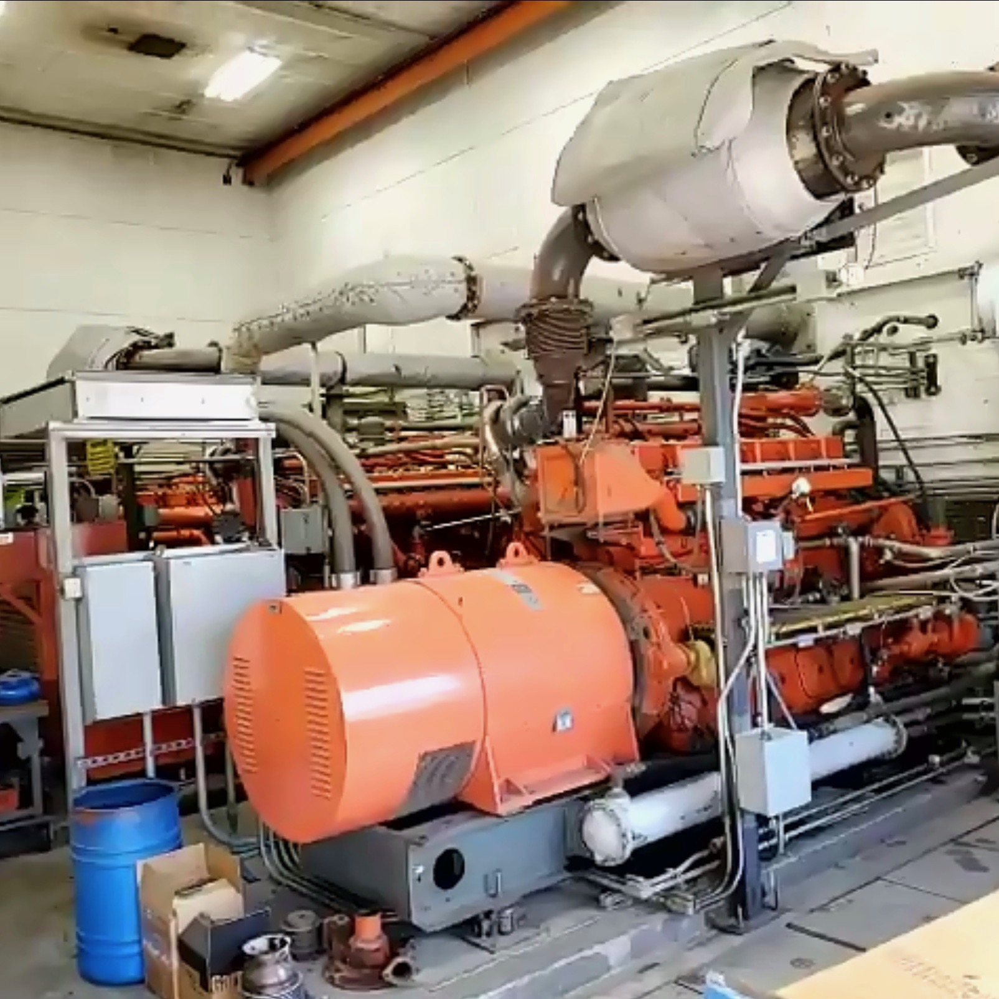
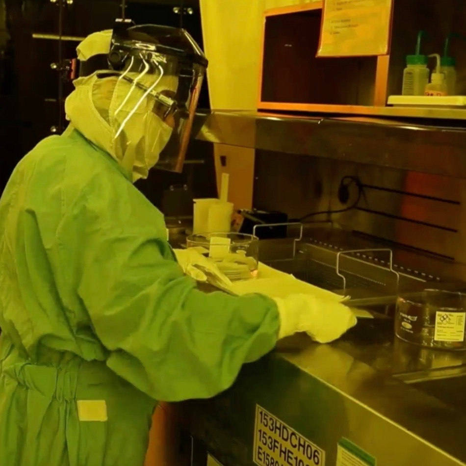
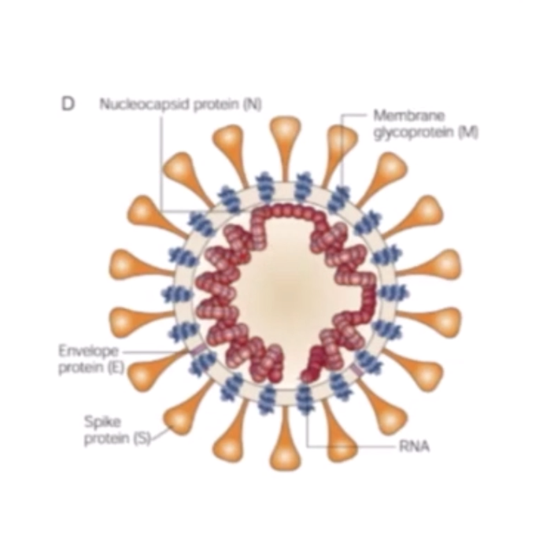

Throughout my four years of high school, I have learned about many different engineering fields and have had the opportunity to hear from real engineers in these fields. I have also worked closely with a mentor through the Dublin Engineering and Design Academy (DEDA) Mentorship Program. The mentorship program has helped me learn skills for college and the professional world. This page of my portfolio details field trips I have participated in through DEDA, guest speakers the Academy has allowed me the opportunity to hear from, and my experience in the mentorship program. My detailed resume, including work experience, relevant coursework, and extracurriculars, is linked above.
One of the many ways the engineering academy prepares me for my future in project management in the technological field is through the opportunity of field trips. One field trip I have attended that gave me useful knowledge and was memorable was touring Stanford University and visiting the Computer History Museum. I learned about Stanford's various classes offered in the field of computer science, such as Hardware Systems, Numerical Analysis, Mathematical Foundations of Computing, and more. Not only did I learn a lot about Stanford University, a highly-ranked school, but I also gained useful knowledge about Computer Science from the Computer History Museum, which is necessary for my desired work field. One fun fact that stood out to me from the Museum was regarding Artificial Intelligence. I learned that, in 1989, IBM beat World Chess Champion Garry Kasparov with a computer named "Deep Blue." I also learned about autonomous vehicles and early machines.
Another field trip I embarked on with DEDA that had a lasting impact on me was the S.H.E. Leads Conference centered around successful women in STEM fields. This conference included influential speakers that discussed their career backgrounds and workshops that taught the female student attendees about different job fields in Silicon Valley. One workshop I participated in focused on civil engineering. This workshop challenged students to create a working model of a water drainage system for a client's driveway. Utilizing teamwork and problem-solving skills, my team and I successfully modeled the drainage system. We even won a prize for being the first group to finish. These experiences I had at this conference helped me gain a better understanding of what the future holds for me in my career. The stories I learned from various women in the job force also taught me what options I have to obtain a successful STEM job.
Through the academy, I have also been allowed to tour the Dublin San Ramon Services District Wastewater Treatment Plant twice--once in-person and once virtually. These tours have taught me the extensive processes involved in how our wastewater is filtered and sanitized. The plant also treats the water to improve water hardness by using a demineralization process to slow the buildup of salts and minerals in groundwater basins. One question answered on this tour that stood out to me was: "How safe is the recycled water treated at the plant?" I learned that the plant treats water to meet regulatory standards--purified thrice, disinfected, then monitored--but cannot be used for potable purposes. These uses that are prohibited include drinking, bathing, and cooking. It was also interesting to learn that the average water service cost for a single-family home varies during different seasons. During the winter, the average bimonthly price is $78.01, while in the summer, the price increases to $135.98 bimonthly.
This year, I embarked on a virtual job shadow at Lawrence Livermore National Laboratory (LLNL). First, I learned the history of the laboratory. It was established in 1952 to meet urgent national security needs by advancing nuclear weapons science and technology. Now, LLNL still focuses on the nation's security through scientific research and engineering development. They have also started work aimed at the development of sustainable energy resources and technologies. LLNL also states that they are working to increase their understanding of climate change. This energy-focused work is "energy security." This virtual job shadow was an opportunity to ask LLNL employees in different fields about their work. One engineer, Brandon Demory, describes that his day-to-day work at LLNL includes various tasks for his current sensors project. Some days he takes measurements in the lab and analyzes the test results. Other days he is in the office running simulations and doing data analysis. Brandon said that each of his days at LLNL is different because he frequently jumps around between roles in a project. On his project, Brandon collaborates with about seven other scientists whom each have their expertise. Brandon also said that he does hands-on work while others at LLNL work on simulations. This field trip was valuable to me because I learned about a real-life engineering job. I can now predict what my future work may include if I work at a company like LLNL.
Roche is a healthcare company that works with pharmaceuticals and diagnostics. I got the chance to hear from Roche's team virtually. The employees used Roche's development of their COVID-19 tests to describe their "Basic IVD Product Development Process." First, Marintha Heil, the Director of Infectious Disease Research at Roche Diagnostics Solutions, gave some background to the origins of COVID-19. I learned that the World Health Organization (WHO) reported a case of "pneumonia of unknown etiology" on December 31, 2019. This case resulted in the WHO declaring the virus a global pandemic on March 11, 2020. Then, Marintha told us the benefits of Roche using PCR for their diagnostic tests (as opposed to sequencing). PCR is prepared quickly at a low cost, and it is a sensitive test. Marintha laid out how Roche creates their tests for viruses and bacteria that cause diseases. These include COVID-19, Zika, and HIV. The first step in their test development process is research. They find out what customers need and if the technology is available. Then, they measure feasibility. For COVID-19, Roche's team assessed possible COVID-19 tests to identify the most sensitive, specific, robust, accurate, and precise test. After finding their best candidate, the team moves to the verification step. They conduct experiments to show how the test performs and if its results are reproducible under different conditions. Once they verify the test, Roche inquires the validity. They study clinical utility and clinical reproducibility. Next, the team ensures the test is manufacturable. Roche made sure they had a large supply of tests on-hand to immediately ship out once they received approval--the last step. Roche's final step in their development process is to submit the test to the country's governing body to be approved for use. Roche submitted their COVID-19 to the Emergency Use Authorization (EUA). I enjoyed this field trip because I learned about engineering in the medical field, which I had never heard about in-depth before. It was also interesting to hear from Roche because their COVID-19 tests are currently very relevant.
Additionally, DEDA has provided me with the opportunity to listen to Guest Speakers who work in the Engineering Field. A memorable presentation I saw was by Dan Cherrier and Natalina Bernardi. They spoke about "Professional Engineering Licensing with Emphasis on Civil Engineering." These speakers taught the class what they do at their jobs as professional engineers and what path to take in education to become a Civil Engineer. They also reviewed the five main fields of Civil Engineering: construction, geotechnical, structural, transportation, and water resources/environmental. I do not plan on being a Civil Engineer in the future, but I had never heard much about Civil Engineering past its name. It was interesting to hear about what Civil Engineers do and how Civil Engineering is applicable in our world.
I also listened to a guest speaker named Emma Cheng. She works at Bio-Rad in the Human Resources field. This speech gave me a more in-depth look at the hiring process and business side of a company. Emma Cheng taught us what to expect when attending an interview and the different things interviewers will evaluate about you. For example, a question she answered was: "What is expected of a candidate at an on-site interview?" Emma responded that interviewers at an on-site interview typically ask questions about someone's experience and what they learned about their desired position in a school. Overall, this guest speaker's presentation was helpful because it made me feel prepared for entering the job-force, whether it be for a high school summer job, an internship, or an interview for a job after college.
Another valuable experience I had access to in the Dublin Engineering and Design Academy was the mentorship program. I worked with my mentor, Mario Lozano, on professional and educational development. I learned from Mr.Lozano tips for college, such as balancing my work with extracurriculars and seeking out internships. My mentor also helped me edit my engineering portfolio. Because Mr.Lozano advised me on these things, I learned valuable skills like time management for college and writing about my educational experiences. My mentor also simulated a job interview with me. I learned interview skills like the importance of making eye contact, showing that you are listening to the interview through body language, and how to answer interview questions. I also learned the kinds of questions to ask the interviewer about a job opportunity. The DEDA Mentorship Program also allowed me to network with other mentors to simulate future professional networking. Through this experience, I learned how to ask professionals questions about their work experience and approach professionals while networking. For example, I practiced introducing myself using an elevator pitch. Overall, this mentorship experience is valuable because I have developed useful skills for college and my career. I am also glad to have a mentor whom I can seek advice from in the future.